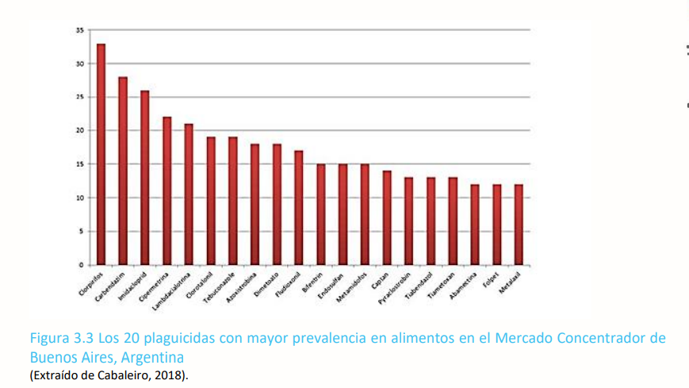

4. Efectos sobre la salud
- Agudos: síndrome colinérgico.
- Crónicos: TEA, TDAH, daño endocrino e inmunológico.
- Mayor riesgo de cáncer.

Impacto neurotóxico demostrado en múltiples estudios

Impacto neurotóxico demostrado en múltiples estudios

Agricultural Health Study – CHAMACOS

OMS: moderadamente peligroso
El clorpirifos sigue siendo uno de los plaguicidas más detectados en Argentina. La evidencia científica demuestra riesgos graves para la salud y el ambiente. Urge fortalecer regulaciones y controles.
Arrastra cada término hacia la definición correcta.